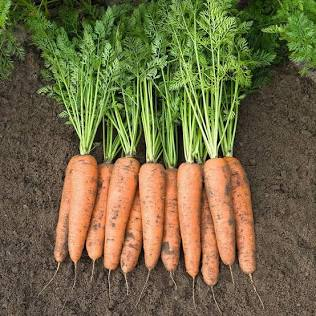

Морква
Морква (Daucus carota subsp. sativus) - дворічнатрав'яниста рослина родини окружкових
(селерових), один із найпоширеніших і найцінніших коренеплодів у світі.

Харчова цінність моркви:
-
Калорійність:
~41 ккал
-
Вода:
~88%
-
Вуглеводи:
9,6 г (з них цукри — близько 4,7 г)
-
Клітковина:
2,8 г
-
Білки:
0,9 г
-
Жири:
0,2 г
Цікаві факти та походження
-
В організмі він перетворюється на вітамін A, необхідний для підтримки зору (зокрема сутінкового),
здоров'я
шкіри та імунітету. Оскільки вітамін A жиророзчинний, моркву краще вживати з невеликою кількістю олії,
сметани чи горіхів.
-
Високий вміст розчинної та нерозчинної клітковини покращує моторику кишківника та живить мікробіоту.
-
Містить лютеїн, лікопен та поліацетилени, які знижують окислювальний стрес і підтримують здоров'я судин.
Найкращі сторти моркви:
-
Kyoto Red (Kintoki)
Японський реліктовий (Dentō-yasai)
-
Purple Haze
Голландська селекція реліктових ліній
-
Paris Market (Marché de Paris)
Французький спадковий сорт (XIX ст.)
-
Yellowstone
Спадковий американсько-європейський сорт
-
Lunar White
Відновлений старовинний середньовічний сорт